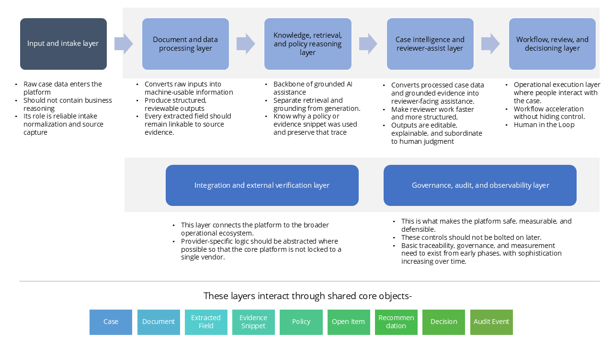
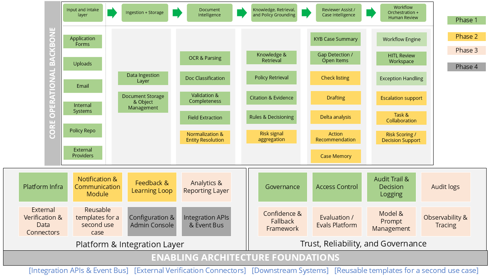

End-to-End Solution Architecture
The platform is organised into five sequential processing layers — intake, document intelligence, knowledge and retrieval, case intelligence, and human review — underpinned by an integration layer and a governance layer that run across all of them. These layers interact through a shared set of core objects: Case, Document, Extracted Field, Evidence Snippet, Policy, Open Item, Recommendation, Decision, and Audit Event.
Architecture — Layer Overview
{kind=link}

Architecture — Detailed Component View
{kind=link}

The Five Processing Layers
| Layer | Role | Key capabilities |
|---|---|---|
| Input & Intake | Reliable capture and normalisation of raw case data — not reasoning. | Application forms, document uploads, email, internal system feeds, external providers |
| Document Intelligence | Converts raw inputs into structured, reviewable information. Every extracted field remains linkable to its source. | OCR & parsing, doc classification, validation & completeness, field extraction, normalization & entity resolution |
| Knowledge, Retrieval & Policy Grounding | Backbone of grounded AI assistance. Retrieval and grounding are always separate from generation — the system records why a policy or evidence snippet was used. | Knowledge & retrieval, policy retrieval, citation & evidence, rules & decisioning, risk signal aggregation |
| Case Intelligence & Reviewer Assist | Converts processed case data and grounded evidence into reviewer-facing assistance. Outputs are editable, explainable, and subordinate to human judgment. | KYB case summary, checklisting, gap detection & open items, drafting, delta analysis, action recommendation, case memory |
| Workflow, Review & Decisioning | The operational execution layer where people interact with the case. Workflow acceleration without hiding control. Human in the loop. | Workflow engine, HITL review workspace, exception handling, escalation support, task & collaboration, notifications, risk scoring & decision support |
Two Cross-Cutting Layers
Integration & External Verification
Connects the platform to the broader operational ecosystem — sanctions screening, registry lookups, external identity providers, and downstream onboarding systems. Provider-specific logic is abstracted so the core platform remains vendor-agnostic.
Governance, Audit & Observability
What makes the platform safe, measurable, and defensible. These controls are not bolted on after launch — they exist from Phase 1. Basic traceability, access control, and measurement are present from day one, with sophistication increasing over time.
| Capability | Purpose |
|---|---|
| Audit logs | Immutable record of every action across the case lifecycle |
| Decision logging | Full decision lineage — AI recommendation + reviewer outcome |
| Governance & access | RBAC, least-privilege, approval hierarchies |
| Evals | Continuous quality measurement for AI outputs |
| Observability | Latency, error rates, queue health, SLA tracking |
| Confidence & fallback | Uncertainty surfacing and graceful degradation to manual review |
| Model & prompt management | Versioned prompts and models — every decision is reproducible |
| Analytics | Override rates, acceptance rates, throughput, reviewer performance |
| Feedback & learning loop | Reviewer corrections feed back into model and policy quality |
Case Lifecycle Through the Architecture
A KYB application moves through the architecture in eight distinct steps:
| Step | Name | What happens |
|---|---|---|
| 1 | Case intake | An application, document upload, or email creates or updates a Case. Raw files are captured and linked to the case object. |
| 2 | Document processing | Documents are stored, OCR'd, classified by type, parsed for fields, normalised, and checked for obvious gaps or inconsistencies. |
| 3 | Retrieval & policy grounding | The system retrieves case evidence from processed documents, policy/SOP content relevant to the business type and jurisdiction, and applicable rules and thresholds. These are assembled into a grounded reasoning context. |
| 4 | Case preparation | The platform generates: KYB Case Summary, open items and gap flags, prefilled checklist elements, suggested follow-up communication drafts, action recommendations, and risk signals. The case is now review-ready. |
| 5 | Human review | The reviewer opens the HITL workspace, inspects evidence, edits AI outputs as needed, confirms or adjusts checklist items, and makes a decision: proceed, request more information, escalate, reject, or approve. |
| 6 | Follow-up & re-review | If more information is needed, drafting and notification modules handle follow-up. New documents are ingested back into the same case. Case memory and delta analysis mean the reviewer picks up exactly where they left off — not from scratch. |
| 7 | Final decisioning | A Decision is recorded with rationale, evidence citations, policy version references, reviewer identity, and any override reasons. Immutable. Auditable. |
| 8 | Monitoring & feedback | Post-decision analytics, audit logs, and learning loops feed back into model quality and policy accuracy for future cases. |
Core Architectural Principles
| # | Principle | Design implication |
|---|---|---|
| 1 | Shared case object as system anchor | Documents, extractions, open items, policy references, reviewer actions, and decisions all attach to the Case. No orphaned data. |
| 2 | Retrieval before reasoning | The system retrieves evidence and policy first, then reasons over grounded context — never generates from generic model memory. |
| 3 | Evidence-backed outputs by default | Every important output — summaries, checklist states, recommendations — links to a source evidence snippet or policy clause. No floating claims. |
| 4 | Human authority over final decisions | The system supports decisions; it does not make them silently. In all early phases, every decision requires an explicit human action. |
| 5 | Modular services, not monolith prompts | OCR, extraction, retrieval, summary generation, drafting, workflow state, and audit logging are distinct services — independently deployable, testable, and replaceable. |
| 6 | Graceful degradation | When confidence is low, retrieval is weak, or parsing fails: surface uncertainty, create open items, and fall back to manual review. Never produce overconfident, unsupported outputs. |
| 7 | Governance by design | Auditability, access control, and release gating are first-class architectural concerns — present from Phase 1, not bolted on later. |